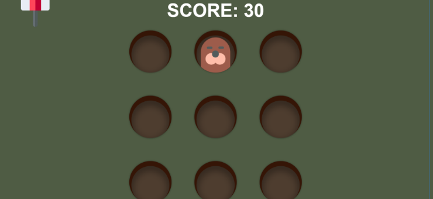

Whack-a-Mole is een klassiek kansspel waarbij de speler een hamer gebruikt om virtuele mollen uit de grond te slaan. De mollen verschijnen willekeurig en steeds korter aan de oppervlakte. De speler moet zo snel mogelijk de mollen slaan voordat ze weer terug in de grond verdwijnen. Hoe meer mollen de speler slaat, hoe hoger het scoren.